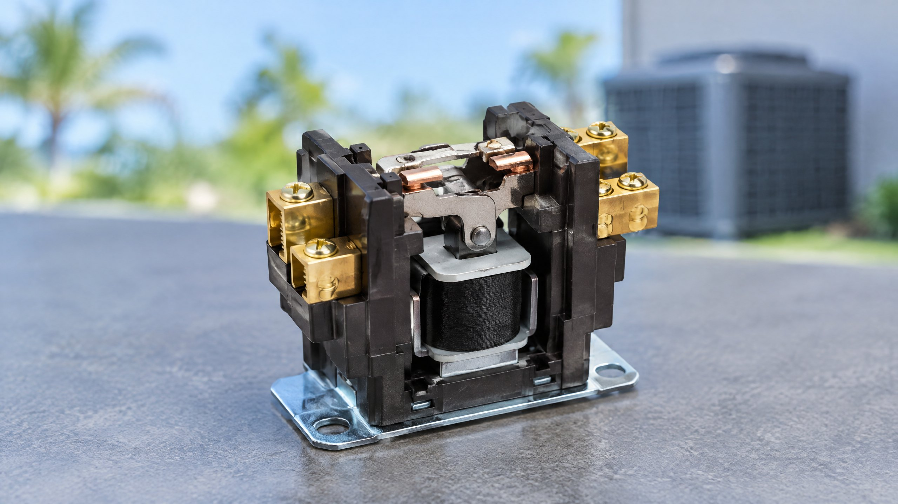

An AC contactor is a power-switching component, not a diagnosis. If a repair recommendation names it, the useful question is what it should do in your equipment and what finding shows that it is not doing that job. A cooling problem alone cannot supply that answer.
This explanation is for Tampa and North Tampa homeowners trying to understand the component named during an AC repair assessment. It is separate from troubleshooting a specific humming fan, selecting a compressor, or comparing complete systems. The electrical principles do not change from Lutz to Carrollwood; the actual equipment design and measured findings matter.
What does an AC contactor actually switch?
A conventional electromagnetic contactor lets a control signal operate a separate power circuit. Its coil creates a magnetic field that moves an internal mechanism, closing normally open power contacts. When the coil is no longer energized, a spring normally returns those contacts to their open position. Schneider Electric and Farnell describe this basic sequence.[1][2]
In an air-conditioning application, a contactor can switch power to equipment such as a compressor or fan. The installed wiring determines which load it controls. Do not assume every system uses the same contactor, pole arrangement, or control architecture. The equipment diagram and manufacturer instructions establish the intended sequence.
The contactor does not produce cooling itself. It is part of the electrical path that allows another component to operate when commanded. Closing a switch does not establish that the compressor, fan, refrigerant circuit, or indoor airflow is performing correctly.
Why are the control signal and power contacts different?
The coil responds to its control circuit; the main contacts carry the electrical load being switched. These have separate ratings and roles. Farnell distinguishes the operating coil, contact configuration, operating voltage, and load current when discussing selection.[2] A part that looks similar can therefore be unsuitable for another installation.
This distinction also matters during diagnosis. A contactor that has not received the expected command is not the same finding as a contactor receiving the correct command but failing to respond. A technician should establish what the equipment is calling for before attributing an inactive outdoor unit to the switch.
Does a click or hum prove the contactor works?
No. A mechanical click can accompany contact movement, but the sound alone does not prove that the intended power path is working or that cooling is normal. Likewise, humming, buzzing, or repeated clicking is not enough to identify the contactor as the cause. Record the timing and the equipment's behavior rather than choosing a part by sound.
Schneider Electric and Farnell describe several possible contactor problems, including worn contacts, coil faults, sticking mechanisms, and unstable or unsuitable coil supply conditions.[1][2] Those possibilities require assessment; this is not a guide to listening through an open electrical cabinet.
If the specific symptom is an outdoor fan humming but not spinning, use that separate article. A fan, control, power, or other component problem can overlap with contactor symptoms. Our AC running without cooling article addresses that broader operating complaint without identifying one failed part.
What can fail inside a contactor?
Power contacts can wear or become damaged. Switching can create arcing, and damaged contact surfaces can increase electrical resistance. A mechanism may also stick, or a coil may fail to create the intended magnetic action. These are general failure modes described in the electrical references, not conclusions about your unit.[1][2]
Similar-looking behavior can originate outside the part. A missing or unstable control signal, wiring condition, or problem in the supplied load can change what happens at the contactor. Replacing the switch without separating those conditions may leave the original complaint unresolved.
Ask whether the finding concerns the control side, the switching contacts, or another component. This is more useful than accepting “it is electrical” as the entire explanation. A photograph of the part may document condition, but it does not replace the operating assessment.
How should a technician confirm a contactor problem?
A professional should compare the intended equipment sequence with what actually occurs. That includes the command to the coil, the contactor's response, the power available through the switching path, and the operation of the connected load. The equipment specifications determine how the findings should be interpreted; no universal voltage or resistance threshold is supplied here.
ENERGY STAR recommends contractor checks of electrical connections, motor voltage and current, and controls so equipment starts, operates, and shuts off properly.[3] That supports checking the complete operating sequence rather than assuming that visible movement or a single sound proves a repair is needed.
| Ask the technician | What the answer should establish |
|---|---|
| What should this contactor control? | The equipment-specific load and operating sequence |
| Was the expected command present? | A missing control request versus failure to respond |
| What confirms the switch is faulty? | Relevant inspection and electrical findings, not sound alone |
| What will be checked after replacement? | Correct starting, operation, and shutdown of the affected equipment |
What should a replacement recommendation explain?
If testing confirms the part, ask about the AC contactor replacement scope. The replacement must suit the equipment's control and load requirements, contact configuration, and installation arrangement. The electrical references emphasize matching these specifications rather than choosing a similar-looking switch.[1][2]
The recommendation should also state whether a separate control, wiring, or load problem remains and how operation will be verified. For the written authorization question, see what an AC repair quote should include. This article does not set a replacement price, service life, or warranty promise.
What can a homeowner do before the visit?
Leave electrical cabinets closed. Do not push the contactor mechanism, bridge terminals, add a jumper, or bypass a protective control. Turning cooling off at the thermostat is not confirmation that electrical equipment is de-energized, and it is not permission to touch internal parts.
Use the normal accessible thermostat controls to stop abnormal cooling operation and report what you observed from outside the equipment. If smoke, sparking, a burning smell, or water near electrical equipment is present, avoid the affected area and seek urgent qualified help. Do not repeatedly restart the system to reproduce the condition. Keep the diagnosis focused on equipment behavior and professional findings, not a homeowner electrical experiment.
Frequently Asked Questions
Is an AC contactor the same as a capacitor?
No. A contactor switches an electrical circuit in response to a control signal. A capacitor is a different component. Similar symptoms do not establish which component, if either, has failed.
Does hearing a click mean the contactor is good?
No. A click can accompany mechanical movement, but it does not prove that the power contacts, connected equipment, or cooling operation are correct. Assessment must consider the intended sequence and relevant findings.
Does an inactive contactor always need replacement?
No. The expected control command may be absent, or another system condition may be involved. A professional should distinguish missing command from a contactor that fails to respond correctly.
Can I press the contactor to make the AC start?
Do not press the mechanism, bridge terminals, or bypass controls. Leave the cabinet closed and arrange diagnosis. A temporary forced start would not establish the cause or confirm normal equipment operation.
Sources
[1] Schneider Electric: What Is an AC Contactor and How Does It Work? General electromagnetic switching, possible failure modes, and specification matching. Industrial examples are not treated as residential wiring instructions.
[2] Farnell Technical Resources: Electromagnetic Contactors Explained. Coil/contact roles, general failure possibilities, and application-specific selection.
[3] ENERGY STAR: Maintenance Checklist. Professional electrical and control checks, including starting, operation, and shutdown.
Editorial Source Review & Publisher
Prepared for On The Way Heating & Air from the electrical-manufacturer, technical, and federal references above. This is a general component explanation, not a diagnosis, an installation instruction, or approval of a replacement part for your system. Dustin Miller began HVAC work with his father in 2006; that family-rooted background is company context, not a claim of a personal inspection.